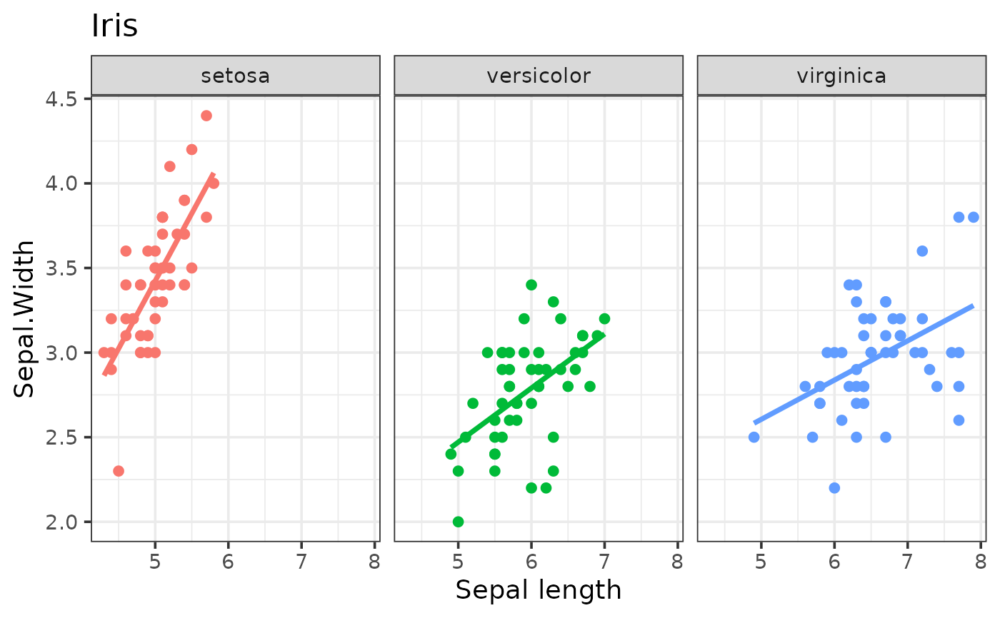

Pipe-friendly setters. Each returns a modified kggplot; unspecified
arguments are left unchanged.
Usage
kgg_add(p, data = NULL, ...)
kgg_labs(
p,
title = NULL,
subtitle = NULL,
caption = NULL,
x = NULL,
y = NULL,
...
)
kgg_theme(p, theme, base_size = NULL, palette = NULL)
kgg_palette(p, palette)
kgg_legend(p, legend)
kgg_facet(p, facet, ...)Arguments
- p
A
kggplot.- data
Data of the new layer (default: the data of the first layer, handy for e.g. adding a smoother).
- ...
For
kgg_add(): arguments ofkggplot()(aesthetics,type, geometry parameters, ...). Forkgg_labs(): legend titles such ascolor = "Species". Forkgg_facet(): arguments of the facet function.- title, subtitle, caption, x, y
Titles.
NAremoves a title.- theme, base_size, palette, legend, facet
See
kggplot().
Details
kgg_add() appends a layer. Aesthetics you do not give (x, y,
color...) are inherited from the first layer when they refer to columns
that exist in the new data; type is guessed again.
Examples
p <- kggplot(iris, "Sepal.Length", "Sepal.Width", color = "Species")
p |>
kgg_add(type = "smooth") |>
kgg_labs(title = "Iris", x = "Sepal length") |>
kgg_theme("bw", base_size = 14) |>
kgg_facet("Species") |>
kgg_legend("none")
